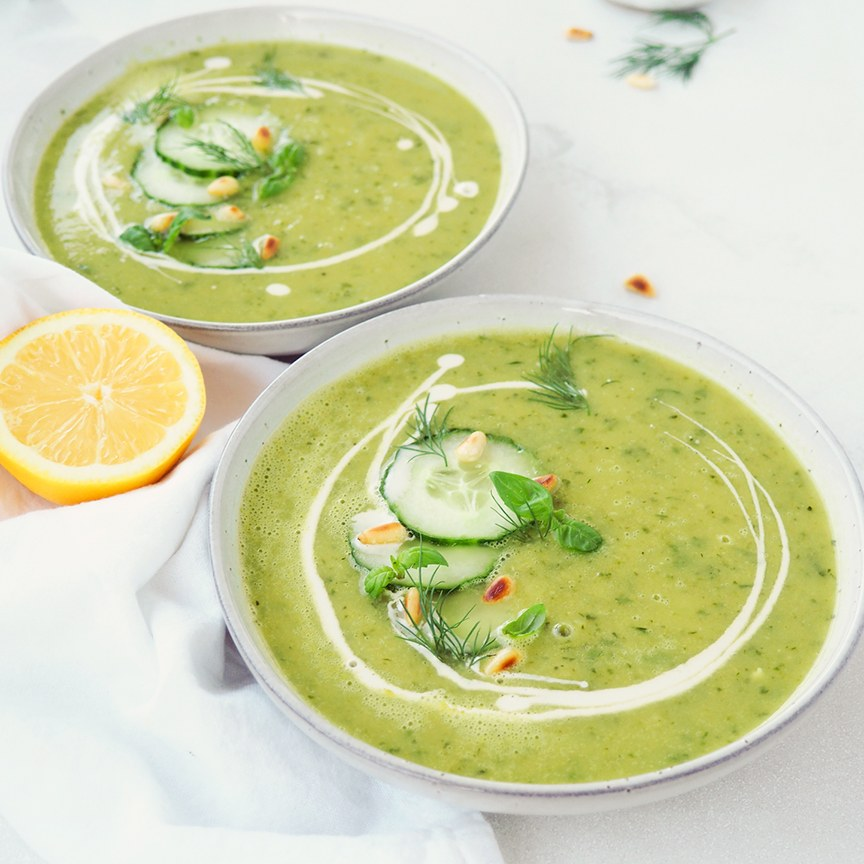

frisse-komkommersoep

Ingrediënten (voor 2 personen)
- 1,25 komkommers
- 2 blaadjes spinazie
- 1/4 ui (gesnipperd)
- 1 teenje knoflook (gepeld en fijngehakt)
- 1 el zure room
- 1 el mayonnaise
- 2 el azijn
- peper
- zour
- 0,13 rammermas
- 1 bosje citroenmelisse
- olijfolie
Bereiding
- Schil 2 komkommers. Blancheer de schillen enkele minuten in lichtgezouten water, laat schrikken in koud water en uitlekken. Snij het vruchtvlees in blokjes.
- Doe de komkommerblokjes samen met de schillen, de spinazieblaadjes, ui, knoflook, zure room, mayonaise en sushi-azijn in de blender. Mix tot een gladde soep. Kruid met peper en zout
- Schil de rammenas en snij hem samen met de halve komkommer in kleine blokjes. Meng met een scheutje olijfolie, peper en zout.
- BWerk de komkommersoep af met de groenteblokjes en een takje citroenmelisse. Serveer met een sneetje witbrood.